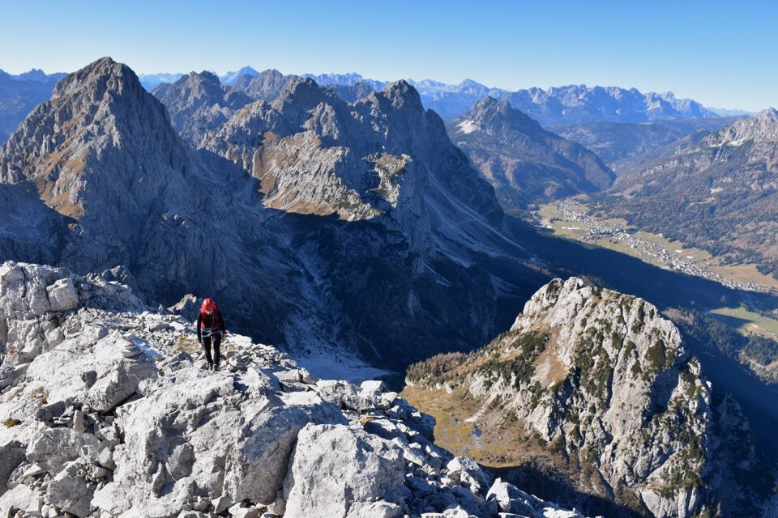
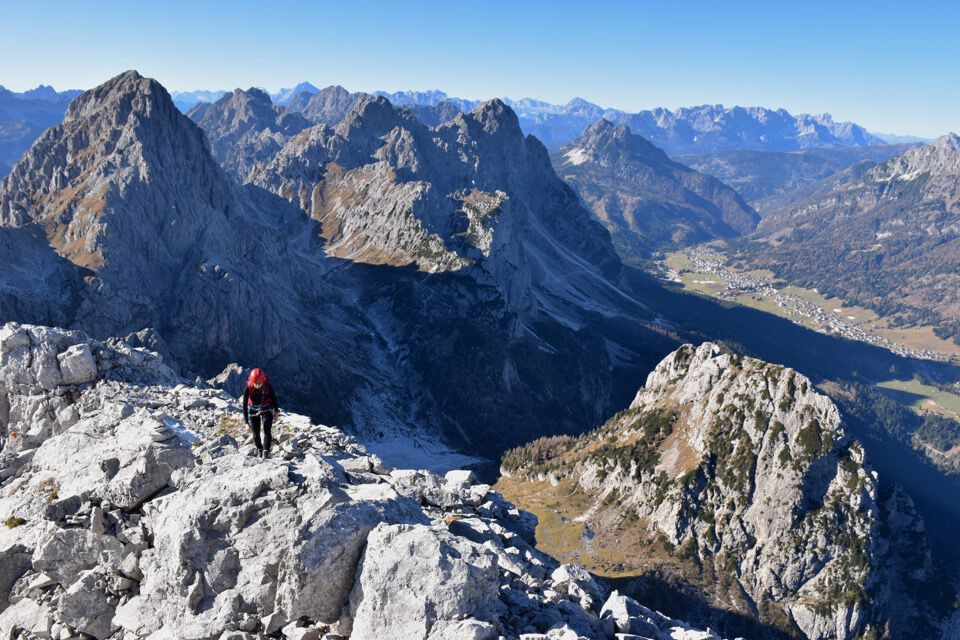
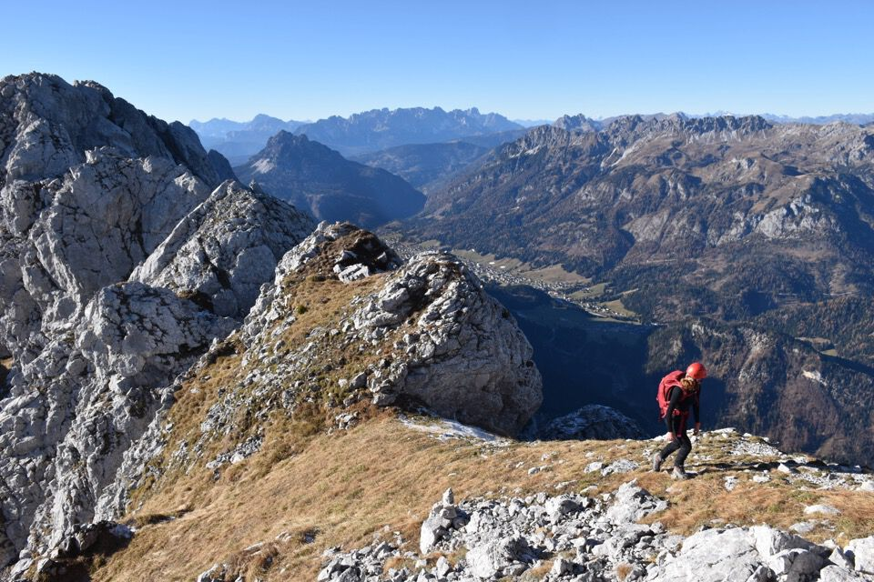
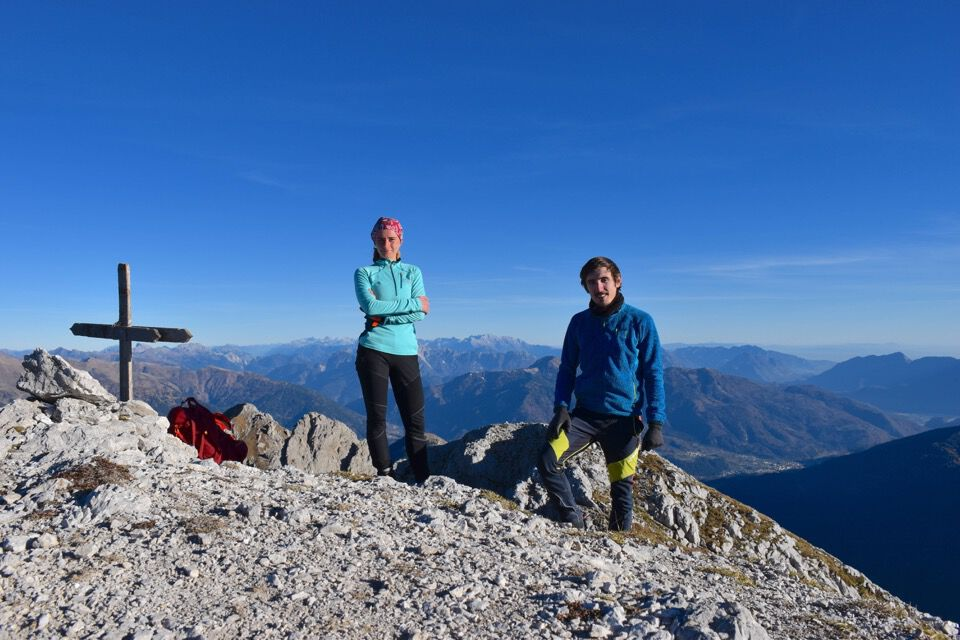

Indecisi fino all'ultimo sulla mèta, tiro fuori dal cappello questa cresta di cui avevo sentito parlare con reverenza: itinerario splendido, allo stato originario.
Arrivati prestissimo a Sappada... ah, ma l'alba è fra un'ora e mezza?
Iniziamo (e finiremo) la gita sotto una magnifica luna piena: la più bella che ho mai visto.
Alba in Vallòn Popèra.
Arriviamo alla conca di Geu, luogo magnifico (e gelido!) che ancora non avevo mai visitato.
Già vediamo un pezzo della cresta che percorreremo.
La Creta Forata: deve essere interessante salirci anche da qui.
Dopo due ore e mezza di ombra e gelo eccoci a passo Geu alto... ah che bello il sole!
Si parte!
Sotto una parete aggettate trovo il più bel clapusç che io abbia mai visto!
La cresta è sempre divertente e stimolante.
Meglio calarsi che qua non se ne esce.
 

La cresta non sembra finire mai, e dietro ad ogni cimotto una sorpresa.
Il tratto più impegnativo, con l'attacco di III in bella verticalità, su roccia splendida.
Prometto che è l'ultima...
Cima: è metà novembre ma ci si può distendere e si sta divinamente, ah che bello.
Ma se devo dormire tanto valeva farlo a letto e restare a casa: alziamoci e guardiamoci un po' attorno!
Qui il monte Avanza con la Cengia del Sole nella sua interezza.
Non avrei mai pensato che il Cimòn fosse così panoramico! Qui tutta la val Fleons bassa.

E qui la val Fulìn, con la splendida Collina in fondo, sotto al Cogliàns.
Bellissimi, per il loro contrasto, i monti di Fleons.
Una foto ricordo e via giù!
Già lì?
Chiaramente lungo la discesa bollinata ci perdiamo e ci tocca disarrampicare un saltino.
La creto di Tùio: biele.
La temibile Creta da Fuina.
La Creta Forata come un vulcano.